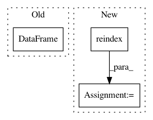

134db0b8216e32dd6d91a57f7d18409a6028720f,linearmodels/tests/panel/test_between_ols.py,,test_missing,#Any#,93
Before Change
res = mod.fit(reweight=True)
dep = np.nanmean(mod.dependent.values3d, axis=1).T
exog = pd.DataFrame(np.nanmean(mod.exog.values3d, axis=1).T,
columns=mod.exog.vars)
weights = np.nansum(mod.weights.values3d, axis=1).T
ols = IV2SLS(dep, exog, None, None, weights=weights)
ols_res = ols.fit("unadjusted")
assert_results_equal(res, ols_res)
After Change
weights = mod.weights.dataframe.groupby(level=0).sum()
dep = dep.reindex(mod.dependent.entities)
exog = exog .reindex(mod.dependent.entities)
weights = weights.reindex(mod.dependent.entities)
ols = IV2SLS(dep, exog, None, None, weights=weights)
ols_res = ols.fit("unadjusted")
In pattern: SUPERPATTERN
Frequency: 3
Non-data size: 3
Instances
Project Name: bashtage/linearmodels
Commit Name: 134db0b8216e32dd6d91a57f7d18409a6028720f
Time: 2017-04-04
Author: kevin.k.sheppard@gmail.com
File Name: linearmodels/tests/panel/test_between_ols.py
Class Name:
Method Name: test_missing
Project Name: bashtage/linearmodels
Commit Name: 548f35f232e13d87d150fa5b5b00ecd2123dc206
Time: 2018-06-02
Author: kevin.k.sheppard@gmail.com
File Name: linearmodels/tests/panel/results/generate-panel-data.py
Class Name:
Method Name:
Project Name: bashtage/linearmodels
Commit Name: 134db0b8216e32dd6d91a57f7d18409a6028720f
Time: 2017-04-04
Author: kevin.k.sheppard@gmail.com
File Name: linearmodels/tests/panel/test_between_ols.py
Class Name:
Method Name: test_missing_weighted